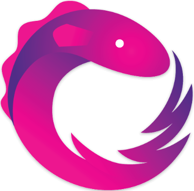

<!--The content below is only a placeholder and can be replaced.-->
<div style="text-align:center" *ngIf="!clickedGetStarted">
  <h1>
    Welcome to {{ title }}!
  </h1> 
  
  
  <div>
    <button  mat-flat-button  color="accent" (click)="changeMenu()" >Get Started</button>
  </div>
  
</div>


<mat-sidenav-container class="sidenav-container" *ngIf="clickedGetStarted" color="accent">
  <mat-sidenav
    #drawer
    class="sidenav"
    fixedInViewport="true"
    [attr.role]="isHandset ? 'dialog' : 'navigation'"
    [mode]="(isHandset | async)!.matches ? 'over' : 'side'"
    [opened]="!(isHandset | async)!.matches">
    <mat-toolbar color="primary">Menu</mat-toolbar>
    <mat-nav-list>
      <a mat-list-item [routerLink]="['/promise']" (click)="changeTitle('PROMISE')"> Promise </a>
      <mat-divider [inset]="true"></mat-divider>

      <a mat-list-item [routerLink]="['/simple-observable']"  (click)="changeTitle('SIMPLE OBSERVABLE')"> Simple Observable </a>
      <mat-divider [inset]="true"></mat-divider>

      <a mat-list-item [routerLink]="['/subject']"  (click)="changeTitle('SUBJECT')"> Subject </a>
      <mat-divider [inset]="true"></mat-divider>

      <a mat-list-item [routerLink]="['/async-subject']"  (click)="changeTitle('ASYNC SUBJECT')"> Async Subject </a>
      <mat-divider [inset]="true"></mat-divider>

      <a mat-list-item [routerLink]="['/behaviour-subject']"  (click)="changeTitle('BEHAVIOUR SUBJECT')"> Behaviour Subject </a>
      <mat-divider [inset]="true"></mat-divider>

      <a mat-list-item [routerLink]="['/replay-subject']"  (click)="changeTitle('Replay SUBJECT')"> Replay Subject </a>
      <mat-divider [inset]="true"></mat-divider>

      <a mat-list-item [routerLink]="['/operators']"  (click)="changeTitle('Operators')"> Operators </a>
      <mat-divider [inset]="true"></mat-divider>

    </mat-nav-list>
  </mat-sidenav>
  <mat-sidenav-content>
    <mat-toolbar color="primary">
      <button
        type="button"
        aria-label="Toggle sidenav"
        mat-button
        class="mat-focus-indicator sidenav-toggle mat-button mat-button-base"
        (click)="drawer.toggle()"
        *ngIf="(isHandset | async)!.matches">
        <mat-icon aria-label="Side nav toggle icon">menu</mat-icon>
      </button>
      <span>{{currentTitle}}</span>
    </mat-toolbar>
    <router-outlet></router-outlet>
  </mat-sidenav-content>
</mat-sidenav-container>